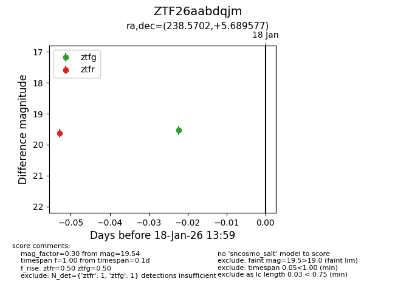
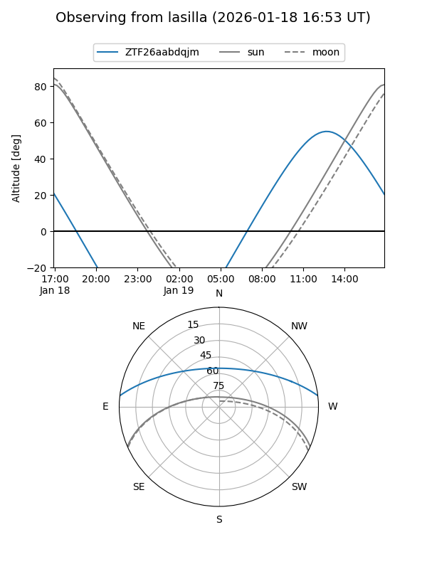
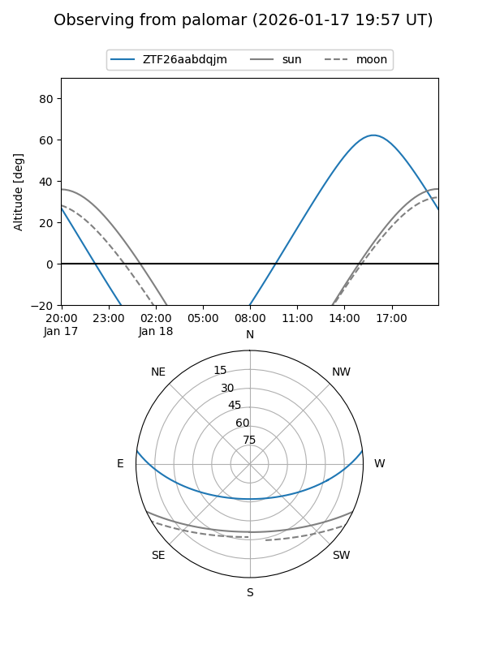
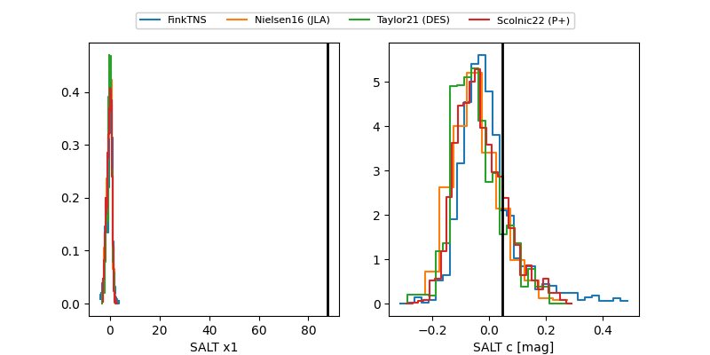

ZTF26aabdqjm
Target ZTF26aabdqjm at 2026-01-18 14:00
Aliases and brokers:
FINK: link
Lasair: link
ALeRCE: link
alt names
ZTF26aabdqjm (ztf,fink_ztf)
Coordinates:
equatorial (ra, dec) = 238.5702,+5.68958
equatorial (HMS+DMS) = 15:54:16.86,+05:41:22.48
galactic (l, b) = (15.1385,+41.57545)
Flags:
Photometry:
last ztfg=19.54, ztfr=19.63
1 ztfg, 1 ztfr detections
Lightcurve

Visibility


Additional plots
